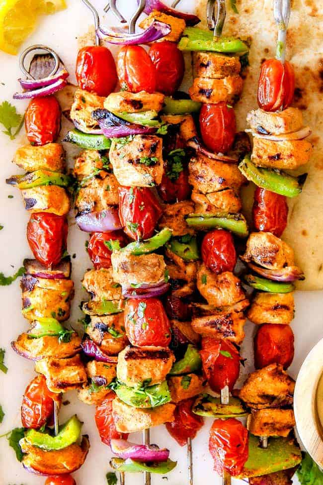

Chicken Kabobs

Description
Sweet and juicy, tart and sunny, pineapple is brilliant fresh, but did you know that it’s delicious when thrown on a grill?
Grilled pineapple gets a lovely caramelization and its sweet-tartness intensifies into something totally otherworldly.
Paired with juicy marinated chicken and skewered onto colorful, veggie-laden kabobs.
A trip to Hawaii may not be in the cards this summer, but these Hawaiian chicken kabobs will get you really close—at least they’ll fill your senses with all of those beautiful
sweet, salty, rich flavors that you love so much.
And best of all? This meal absolutely demands that you mix up a pina colada (or two!).
Ingriedients
- Toasted sesame oil
- Grated fresh ginger
- Garlic cloves
- Soy sauce or tamari
- Rice vinegar
- Brown sugar
- Ketchup
- Smoked Paprika
Steps
- Up to one day before: get the chicken marinating! Whisk together the Hawaiian chicken marinade ingredients. Save about half of the sauce for basting the chicken,
and use the rest to marinate the chicken breast pieces. Pop it in the fridge—at least 30 mins, but overnight is best!
-
The night before: if you’re using bamboo or wooden skewers,
you’ll want to soak them in water overnight before loading them with chicken, pineapple and veggies to keep them from burning on the hot grill.
-
Par-boil the sweet potatoes. You could do this up to a day ahead of time, too, if you’re a work-ahead kind of person!
They need a bit of cooking before they hit the grill so that they’re perfectly done right when the chicken is.
-
Prep the other veggies.
-
Assemble! Load your skewers with pieces of marinated chicken, onion pieces, bell pepper, sweet potatoes and pineapple.
-
Grill the Hawaiian chicken kabobs! Grill them for about 2-3 minutes per side. When you turn the chicken skewers, baste the uncooked side with some of the reserved marinade.
Your kabobs are done when the chicken pieces register 165°F on an instant-read thermometer.
Homepage
Return to homepage